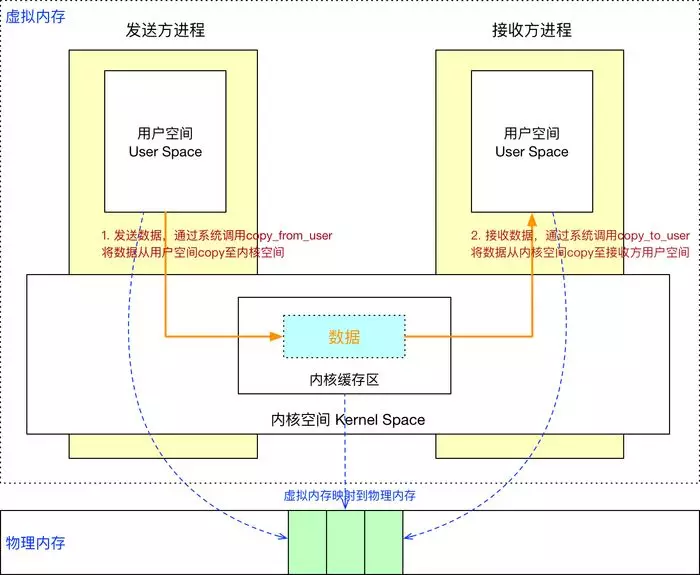
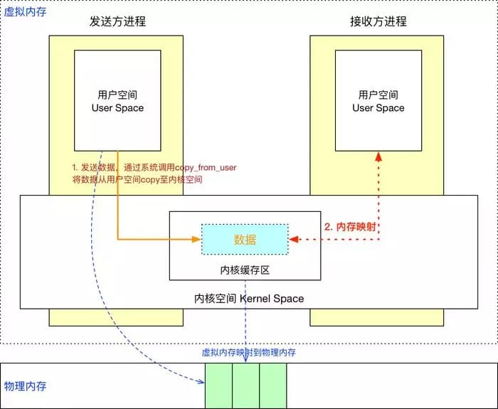
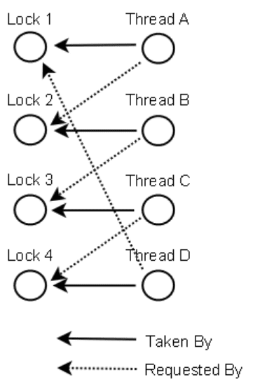

进程
进程模型：
- 进程是对正在运行程序的一个抽象。单个CPU通过轮转方式也可以实现伪并行。在CPU的一个核中，任何时候都只有一个进程在执行。
进程分类：
- 在系统中有与用户交互的前台进程，也有停留在后台处理诸如邮件，打印等活动的守护进程。
进程的地址空间：
- 在Unix/Linux中，只有一个系统调用可以用来创建新进程：fork。子进程共享父进程的所有内存，它通过写时复制（copy-on-write）的方式共享，它有机会共享父进程的其他资源，比如打开的文件等。一旦两者之一想要修改部分内存，则这块内存首先被复制，以确保发生在私有内存区域，写时的内存是不可以共享的。
- 在Windows中，一开始父进程和子进程之间的地址空间就是不同的。
进程的层次结构：
- 在UNIX中，进程和它的所有子进程以及其后裔组成一个进程组。进程不能剥夺其子进程的继承权。
- 在Windows中没有进程层次的概念，所有进程的地位是相同的。唯一类似进程层次的是在创建进程的时候，父进程会得到一个句柄，它可以用来控制子进程。但是它有权将这个句柄传送给某个进程，这样它们就不存在层次结构了。
进程状态：运行态，阻塞态，就绪态。如下图：

为了实现进程模型，操作系统维护着一张表格（一个结构数组），即进程表（process table）。每个进程占用一个进程表项。该表项的部分典型字段如下：

在了解这些之后，对单个CPU如何进行伪并行可以有更多的理解。当中断发生后，操作系统底层的工作步骤如下：
- 中断硬件将程序计数器，程序状态字，寄存器等压入堆栈；
- 计算机跳转到中断向量所指示的地址（中断向量：包含中断服务程序的入口地址），硬件从中断向量装入新的程序计数器；
- 汇编语言保存寄存器值，对于当前进程而言，通常保存在进程表项中；
- 汇编语言设置新的堆栈；
- C中断服务例程运行处理某个特定的中断类型剩下的工作（典型地读和缓存输入）；
- 调度程序决定下一个即将运行的进程；
- C过程将控制返回至汇编代码，为当前进程装入寄存器值以及内存映射
- 汇编语言启动新的进程运行。
线程
线程模型：
- 线程给进程模型增加了一项内容，即在同一个进程环境中，允许彼此之间有较大的独立性的多个线程执行；
- 在同一个进程中并行运行多个线程，是对在同一台计算机上并行运行多个进程的模拟。前者多个线程共享同一个地址空间及其它资源。后者多个进程共享物理内存，磁盘，打印机等资源；
- 一个线程可以读写甚至清除另一个线程的堆栈，线程之间没有保护；
- 当多线程进程在单个CPU中运行时，线程轮流运行。
在一个进程中所有线程共享的资源：
- 地址空间
- 全局变量
- 打开文件
- 子进程
- 即将发生的定时器
- 信号与信号处理程序
- 账户信息
每个线程自己的内容：
- 程序计数器
- 寄存器
- 堆栈
- 状态
POSIX线程：
- 为了实现可移植的线程程序，IEEE定义了线程的标准。它定义个线程包为pthread；
- 大部分UNIX及UNIX-like都支持该标准；
- pthread_create，pthread_exit，pthread_join，pthread_yield等。
实现线程的方式：
- 在用户空间实现
- 在内核空间实现
- 混合实现
如下图：

用户空间实现线程：
- 把线程包放在用户空间，内核对其一无所知，从内核的角度，它按照正常的方式管理，即单线程进程；
- 用户级线程可以在不支持线程的操作系统上实现；
- 在用户空间管理线程时，每个进程需要有其专用的线程表，跟进程表类似，它记录着每个线程的程序计数器，堆栈指针等。该线程表由运行时系统管理，当一个线程转换到就绪/阻塞状态时，在表中存放重启该线程所需要的信息；
- 保存线程状态和调度程序都只是本地过程，所以启动它们比进行内核调用效率更髙。另一方面，不需要陷入内核，不需要上下文切换，也不需要对内存髙速缓存进行刷新，因此非常快捷；
- 允许每个进程有自己定制的调度算法。用户级线程还具有较好的可扩展性，这是因为在内核空间中内核线程需要一些固定表格空间和堆栈空间，如果内核线程的数量非常大，就会出现问题；
- 问题一：阻塞调用问题。使用线程的一个主要目标是，允许每个线程使用阻塞调用，但是还要避免被阻塞的线程影响其他的线程。有一种可能的替代方案，就是如果某个调用会阻塞，就提前通知。只有在安全的情形下（即不会阻塞）才进行阻塞调用。否则调用就不进行，代之以运行另一个线程。这个处理方法需要重写部分系统调用库，所以效率不髙也不优雅，不过没有其他的可选方案了。
- 问题二：缺页中断问题。在对缺失的指令进行定位和读入时，相关的进程就被阻塞。如果有一个线程引起页面故障，内核由于不知道有线程的存在，通常会把整个进程阻塞直到磁盘I/O 完成为止；
- 问题三：如果一个线程开始运行，那么在该进程中的其他线程就不能运行，除非第一个线程自动放弃CPU。在一个单独的进程内部，没有时钟中断，所以不可能用轮转调度的方式调度线程。除非某个线程能够按照自己的意志进入运行时系统，否则调度程序就没有任何机会。
在内核中实现线程：
- 内核的线程表保存了每个线程的寄存器、状态和其他信息。这些信息和在用户空间中（在运行时系统中）的线程是一样的；
- 由于在内核中创建或撒销线程的代价比较大，某些系统采取“环保”的处理方式回收其线程。当某个线程被撒销时，就把它标志为不可运行的，但是其内核数据结构没有受到影响。稍后，在必须创建一个新线程时，就重新启动某个旧线程，从而节省了一些开销；
- 当一个多线程进程创建新的进程时，新进程是拥有与原进程相同数量的线程，还是只有一个线程？在很多情况下，最好的选择取决于进程计划下一步做什么；
- 在经典模型中，信号是发给进程而不是线程的。当一个信号到达时，应该由哪一个线程处理它？线程可以“注册”它们感兴趣的某些信号，因此当一个信号到达的时候，可把它交给需要它的线程。但是如果多个线程注册了相同的信号，可能会出现问题。
混合实现：
- 内核级线程和用户级线程彼此多路复用；
- 内核只识别内核级线程，并对其进行调度。其中一些内核级线程会被多个用户级线程多路复用。
进程间通信
概述
IPC，Inter Process Communication。在进程之间的通信最好使用一种结构良好的方式而不要使用中断。有三个问题：
- 一个进程如何把信息传递给另一个进程；
- 确保多个进程在关键活动中不会出现交叉，比如说争夺资源；
- 顺序正确，比如，如果进程A产生数据而进程B打印数据，那么B在打印之前必须等待，直到A已经产生一些数据。
同样的问题和解决方法也适用于线程。
进程隔离
- 进程隔离是为了保护操作系统中进程相互不干扰而设计的一组不同硬件和软件的技术
- 进程的隔离实现，使用了虚拟地址空间
- 进程A的虚拟地址和进程B的虚拟地址不同，这样就防止了进程A将数据信息写入进程B，也就是说进程之间的数据是不共享的，因此进程之间的交互就必须得通过IPC机制
进程间通信就是在不同进程之间传播或交换信息，那么不同进程之间存在着什么双方都可以访问的介质呢？进程的用户空间是互相独立的，一般而言是不能互相访问的，唯一的例外是共享内存区。但是，系统空间却是“公共场所”，所以内核显然可以提供这样的条件。除此以外，那就是双方都可以访问的外设了。在这个意义上，两个进程当然也可以通过磁盘上的普通文件交换信息，或者通过“注册表”或其它数据库中的某些表项和记录交换信息。广义上这也是进程间通信的手段，但是一般都不把这算作“进程间通信”。因为那些通信手段的效率太低了，而人们对进程间通信的要求是要有一定的实时性。
进程间通信主要包括管道, 系统IPC（Inter-Process Communication，进程间通信）(包括消息队列,信号量,共享存储), SOCKET.
管道(pipe)
- 普通管道PIPE, 通常有种限制,一是半双工,只能单向传输;二是只能在父子进程间使用.
- 流管道s_pipe: 去除了第一种限制,可以双向传输.
- 命名管道:name_pipe, 去除了第二种限制,可以在许多并不相关的进程之间进行通讯.
管道单独构成一种独立的文件系统：管道对于管道两端的进程而言，就是一个文件，但它不是普通的文件，它不属于某种文件系统，而是自立门户，单独构成一种文件系统，并且只存在于内存中。
管道的实质是一个内核缓冲区，进程以先进先出的方式从缓冲区存取数据：管道一端的进程顺序地将进程数据写入缓冲区，另一端的进程则顺序地读取数据，该缓冲区可以看做一个循环队列，读和写的位置都是自动增加的，一个数据只能被读一次，读出以后再缓冲区都不复存在了。当缓冲区读空或者写满时，有一定的规则控制相应的读进程或写进程是否进入等待队列，当空的缓冲区有新数据写入或慢的缓冲区有数据读出时，就唤醒等待队列中的进程继续读写。
管道: 优点是所有的UNIX实现都支持, 并且在最后一个访问管道的进程终止后,管道就被完全删除;缺陷是管道只允许单向传输或者用于父子进程之间.并且管道在创建时分配一个page大小的内存，缓存区大小比较有限。
系统IPC: 优点是功能强大,能在毫不相关进程之间进行通讯; 缺陷是关键字KEY_T使用了内核标识,占用了内核资源,而且只能被显式删除,而且不能使用SOCKET的一些机制,例如select,epoll等.
信号量(semophore)
信号量是一个计数器，可以用来控制多个进程对共享资源的访问。它常作为一种锁机制，防止某进程正在访问共享资源时，其他进程也访问该资源。因此，主要作为进程间以及同一进程内不同线程之间的同步手段。
消息队列(message queue)
消息队列，就是一个消息的链表，是一系列保存在内核中消息的列表，由消息队列标识符标识。用户进程可以向消息队列添加消息，也可以向消息队列读取消息。消息队列克服了信号传递信息少、管道只能承载无格式字节流以及缓冲区大小受限等缺点。
消息队列与管道通信相比，其优势是对每个消息指定特定的消息类型，接收的时候不需要按照队列次序，而是可以根据自定义条件接收特定类型的消息。
可以把消息看做一个记录，具有特定的格式以及特定的优先级。对消息队列有写权限的进程可以向消息队列中按照一定的规则添加新消息，对消息队列有读权限的进程可以从消息队列中读取消息。
信号(sinal)
信号是Linux系统中用于进程之间通信或操作的一种机制，信号可以在任何时候发送给某一进程，而无须知道该进程的状态。如果该进程并未处于执行状态，则该信号就由内核保存起来，知道该进程恢复执行并传递给他为止。如果一个信号被进程设置为阻塞，则该信号的传递被延迟，直到其阻塞被取消时才被传递给进程。
信号传递信息少，不适用于信息交换，更适用于进程中断控制，比如非法内存访问，杀死某个进程等。
共享内存(shared memory)
共享内存就是映射一段能被其他进程所访问的内存，这段共享内存由一个进程创建，但多个进程都可以访问。共享内存是最快的 IPC 方式，它是针对其他进程间通信方式运行效率低而专门设计的。它往往与其他通信机制，如信号量，配合使用，来实现进程间的同步和通信。
采用共享内存进行通信的一个主要好处是效率高，因为进程可以直接读写内存，而不需要任何数据的拷贝。
套接字(socket)
套接字作为更通用的接口，传输效率低，主要用于不同机器或跨网络的通信。
总结
Linux是使用的虚拟内存寻址方式，有如下特性：
- 用户空间的虚拟内存地址是映射到物理内存中的
- 对虚拟内存的读写实际上是对物理内存的读写，这个过程就是内存映射
- 这个内存映射过程是通过系统调用mmap()来实现的
IPC机制通信流程【共享内存机制除外】
- 首先，发送方进程通过系统调用将要发送的数据从用户空间copy到内核空间缓存区中
- 接着，接收方开辟一段内存空间，然后通过系统调用将内核缓存区中的数据copy到接收方的内存缓存区

这种方式存在两个问题：
- 需要做2次数据拷贝操作
- 接收方进程在接收数据之前，需要事先分配空间来存取数据，但不知道事先要分配多大的空间，这样就可能存在一种在空间上的浪费
针对Android中的Binder通信流程，在数据拷贝上有一个优化：

- Binder借助了内存映射的方法，在内核空间和接收方用户空间的数据缓存区之间做了一层内存映射，就相当于直接拷贝到了接收方用户空间的数据缓存区，从而减少了一次数据拷贝
同步/互斥方式
概述
- 互斥：是指散步在不同任务之间的若干程序片断，当某个任务运行其中一个程序片段时，其它任务就不能运行它们之中的任一程序片段，只能等到该任务运行完这个程序片段后才可以运行。最基本的场景就是：一个公共资源同一时刻只能被一个进程或线程使用，多个进程或线程不能同时使用公共资源。
- 同步：是指散步在不同任务之间的若干程序片断，它们的运行必须严格按照规定的某种先后次序来运行，这种先后次序依赖于要完成的特定的任务。最基本的场景就是：两个或两个以上的进程或线程在运行过程中协同步调，按预定的先后次序运行。比如 A 任务的运行依赖于 B 任务产生的数据。
- 竞争条件（race condition）：两个或多个进程读写某些共享数据，而最后的结果取决于进程运行的精确时序。
临界区
在某些时候进程可能需要访问共享内存或共享文件，或执行另外一些会导致竞争的操作，把对共享内存进行访问的程序片段称作临界区。临界区应满足这些条件：
- 任何两个进程不能同时处于其临界区
- 不应对CPU的速度和数量做任何假设
- 临界区外运行的进程不得阻塞其他进程
- 不得使进程无限期等待进入临界区
忙等待的互斥
当一个进程想进入临界区时，先检査是否允许进入，若不允许，则该进程将原地等待，直到允许为止。
这种方法不仅浪费了CPU时间，而且还可能引起预想不到的结果。考虑一台计算机有两个进程，H优先级较髙，L优先级较低。调度规则规定，只要H处于就绪态它就可以运行。在某一时刻，L处干临界区中，此时H变到就绪态，准备运行(例如，一条I/O操作结束)。现在H开始忙等待，但由于当H就绪时L不会被调度，也就无法离开临界区，所以H将永远忙等待下去。这种情况有时被称作优先级反转问题 (priority inversion problem)。
在单处理器系统中，最简单的方法是使毎个进程在刚刚进入临界区后立即屏蔽所有中断，并在就要离开之前再打开中断。在屏蔽中断之后CPU将不会被切换到其他进程。于是，一旦某个进程屏蔽中断之后，它就可以检査和修改共享内存，而不必担心其他进程介入。
这个方案并不好，因为把屏蔽中断的权力交给用户进程是不明智的。若一个进程屏蔽中断后不再打开中断，整个系统可能会因此终止。而且，如果系统是多处理器，则屏蔽中断仅仅对执行disable指令的那个CPU有效。其他CPU仍将继续运行，并可以访问共享内存。
另一方面，对内核来说，当它在更新变量或列表的几条指令期间将中断屏蔽是很方便的。当就绪进程队列之类的数据状态不一致时发生中断，则将导致竞争条件。所以结论是：屏蔽中断对于操作系统本身而言是一项很有用的技术，但对于用户进程则不是一种合适的通用互斥机制。由于多核芯片的数量越来越多，即使在低端PC上也是如此。因此，通过屏蔽中断来达到互斥的可能性一甚至在内核中一变得日益减少了。
睡眠与唤醒
当一个进程A访问临界区时，其他试图访问临界区的进程在无法进入临界区时将阻塞，而不是忙等待，在前一个进程处理完一个任务后，会主动唤醒其他阻塞的进程。
信号量
信号量
当需要一个计数器来限制可以使用某共享资源的线程数目时，可以使用信号量对象。它保存了对当前访问某一个指定资源的线程的计数值，该计数值是当前还可以使用该资源的线程数目。如果这个计数达到了零，则所有对这个对象所控制的资源的访问尝试都被放入到一个队列中等待，直到超时或计数值不为零为止。
信号量的取值可以为0或者其他正整数，在信号量上只有三种操作可以进行：初始化，P操作和V操作，这三种操作都是原子操作。
P（passeren：通过）操作(递减操作)可以用于阻塞一个进程，V（vrijgeven：释放）操作(增加操作)可以用于解除阻塞一个进程。
信号量机制功能强大，但使用时对信号量的操作分散，而且难以控制，读写和维护都很困难。
1 | P(S): |
信号量（semaphore）的数据结构为一个值和一个指针，指针指向等待该信号量的下一个进程。信号量的值与相应资源的使用情况有关。当它的值大于0时，表示当前可用资源的数量；当它的值小于0时，其绝对值表示等待使用该资源的进程个数。信号量的值仅能由PV操作来改变。
一般来说，信号量S>0时，S表示可用资源的数量。执行一次P操作意味着请求分配一个单位资源，因此S的值减1；当S<0时，表示已经没有可用资源，请求者必须等待别的进程释放该类资源，它才能运行下去。而执行一个V操作意味着释放一个单位资源，因此S的值加1；若S<0，表示有某些进程正在等待该资源，因此要唤醒一个等待状态的进程，使之运行下去。
使用PV操作实现进程互斥时应该注意的是：
- 每个程序中用户实现互斥的P、V操作必须成对出现，先做P操作，进临界区，后做V操作，出临界区。若有多个分支，要认真检查其成对性。
- P、V操作应分别紧靠临界区的头尾部，临界区的代码应尽可能短，不能有死循环。
- 互斥信号量的初值一般为1。
- 分析进程间的制约关系，确定信号量种类。在保持进程间有正确的同步关系情况下，哪个进程先执行，哪些进程后执行，彼此间通过什么资源（信号量）进行协调，从而明确要设置哪些信号量。
- 信号量的初值与相应资源的数量有关，也与P、V操作在程序代码中出现的位置有关。
- 同一信号量的P、V操作要成对出现，但它们分别在不同的进程代码中。
C语言PV操作
#include <semaphore.h>int sem_init(sem_t *sem,int pshared, unsigned int value)- 函数作用：初始化信号量
- sem：信号量指针
- Pshared：决定信号量能否在几个进程间共享，一般取0
- Value：信号量的初始值
- 信号的操作
- P操作：
int sem_wait(sem_t *sem); int sem_try_wait(sem_t *sem);- V操作：
int sempost(sem_t *sem); int sem_getvalue(sem_t *sem);- 销毁信号：
int sem_destroy(sem_t *sem);
- P操作：
实例一
一个生产者，一个消费者，公用一个缓冲区。定义两个同步信号量：
empty——表示缓冲区是否为空，初值为1。
full——表示缓冲区中是否为满，初值为0。
1
2
3
4
5
6
7
8
9
10
11
12
13
14
15// 生产者进程：
while(true){
生产一个产品;
P(empty);
产品送往Buffer;
V(full);
}
// 消费者进程:
while(true){
P(full);
从Buffer取出一个产品;
V(empty);
消费该产品;
}
一个生产者，一个消费者，公用n个环形缓冲区。定义两个同步信号量：
empty——表示缓冲区是否为空，初值为n。
full——表示缓冲区中是否为满，初值为0。
设缓冲区的编号为1～n-1，定义两个指针in和out，分别是生产者进程和消费者进程使用的指针，指向下一个可用的缓冲区。
1
2
3
4
5
6
7
8
9
10
11
12
13
14
15
16
17// 生产者进程
while(TRUE){
生产一个产品;
P(empty);
产品送往buffer（in）；
in=(in+1)mod n；
V(full);
}
// 消费者进程
while(TRUE){
P(full);
从buffer（out）中取出产品；
out=(out+1)mod n；
V(empty);
消费该产品;
}
一组生产者，一组消费者，公用n个环形缓冲区
在这个问题中，不仅生产者与消费者之间要同步，而且各个生产者之间、各个消费者之间还必须互斥地访问缓冲区。
定义四个信号量：empty——表示缓冲区是否为空，初值为n。
full——表示缓冲区中是否为满，初值为0。
mutex1——生产者之间的互斥信号量，初值为1。
mutex2——消费者之间的互斥信号量，初值为1。
设缓冲区的编号为1～n-1，定义两个指针in和out，分别是生产者进程和消费者进程使用的指针，指向下一个可用的缓冲区。
1
2
3
4
5
6
7
8
9
10
11
12
13
14
15
16
17
18
19
20
21// 生产者进程
while(TRUE){
生产一个产品;
P(empty);
P(mutex1)；
产品送往buffer（in）；
in=(in+1)mod n；
V(mutex1);
V(full);
}
// 消费者进程
while(TRUE){
P(full)
P(mutex2)；
从buffer（out）中取出产品；
out=(out+1)mod n；
V（mutex2）；
V(empty);
消费该产品;
}
实例二
题：桌上有一空盘，允许存放一只水果。爸爸可向盘中放苹果，也可向盘中放桔子，儿子专等吃盘中的桔子，女儿专等吃盘中的苹果。规定当盘空时一次只能放一只水果供吃者取用，请用P、V原语实现爸爸、儿子、女儿三个并发进程的同步。
分析：在本题中，爸爸、儿子、女儿共用一个盘子，盘中一次只能放一个水果。当盘子为空时，爸爸可将一个水果放入果盘中。若放入果盘中的是桔子，则允许儿子吃，女儿必须等待；若放入果盘中的是苹果，则允许女儿吃，儿子必须等待。本题实际上是生产者-消费者问题的一种变形。这里，生产者放入缓冲区的产品有两类，消费者也有两类，每类消费者只消费其中固定的一类产品。
解：在本题中，应设置三个信号量S、So、Sa，信号量S表示盘子是否为空，其初值为l；信号量So表示盘中是否有桔子，其初值为0；信号量Sa表示盘中是否有苹果，其初值为0。同步描述如下：
1 | int S＝1; |
互斥量
如果不需要信号量的计数能力，有时可以使用信号量的一个简化版本，称为互斥量(mutex)。互斥量仅仅适用于管理共享资源或一小段代码。由于互斥量在实现时既容易又有效，这使得互斥量在实现用户空间线程包时非常有用。
互斥量是一个可以处于两态之一的变量：解锁和加锁。互斥量使用两个过程。当一个线程（或进程）需要访问临界区时，它调用mutex_lock，如果该互斥量当前是解锁的（即临界区可用），此调用成功，调用线程可以自由进入该临界区。另一方面，如果该互斥量已经加锁，调用线程被阻塞，直到在临界区中的线程完成并调用mutex_unlock，如果多个线程被阻塞在该互斥量上，将随机选择一个线程并允许它获得锁。
管程
使用信号量时要非常小心。一处很小的错误将导致很大的麻烦。为了更易于编写正确的程序，出现了一种髙级同步原语，称为管程(monitor)。
其基本思想是将共享变量和对它们的操作集中在一个模块中，操作系统或并发程序就由这样的模块构成。这样模块之间联系清晰，便于维护和修改，易于保证正确性。
管程有一个很重要的特性，即任一时刻管程中只能有一个活跃进程，这一特性使管程能有效地完成互斥。管程是编程语言的组成部分，编译器知道它们的特殊性，因此可以采用与其他过程调用不同的方法来处理对管程的调用。典型的处理方法是，当一个进程调用管程过程时，该过程中的前几条指令将检査在管程中是否有其他的活跃进程。如果有，调用进程将被挂起，直到另一个进程离开管程将其唤醒。如果没有活跃进程在使用管程，则该调用进程可以进入。
进入管程时的互斥由编译器负责，但通常的做法是用一个互斥量或二元信号量。因为是由编译器而非程序员来安排互斥，所以出错的可能性要小得多。在任一时刻，写管程的人无须关心编译器是如何实现互斥的。他只需知道将所有的临界区转换成管程过程即可，决不会有两个进程同时执行临界区中的代码。
进程/线程调度
概述
当计算机系统是多道程序设计系统时，通常就会有多个进程或线程同时竞争CPU。只要有两个或更多的进程处于就绪状态，这种情形就会发生。如果只有一个CPU可用，那么就必须选择下一个要运行的进程。在操作系统中，完成选择工作的这一部分称为调度程序(scheduler),该程序使用的算法称为调度算法(scheduling algorithm)。
尽管有一些不同，但许多适用于进程调度的处理方法也同样适用于线程调度。当内核管理线程的时候，调度经常是按线程级别的，与线程所属的进程基本或根本没有关联。
- 计算密集型进程：具有较长时间的C PU集中使用和较小频度的I/O等待
- I/O密集型进程：具有较短时间的C PU集中使用和频繁的I/O等待
在不同的系统中，调度程序的优化是不同的：
- 批处理系统
- 交互式系统
- 实时系统
调度算法的目标：
- 所有系统
- 公平：给每个进程公平的CPU份额
- 策略强制执行：保证规定的策略被执行
- 平衡：保持系统的所有部分都忙碌
- 批处理系统
- 吞吐量：毎小时最大作业数
- 周转时间：从提交到终止间的最小时间
- CPU利用率：保持CPU始终忙碌
- 交互式系统
- 响应时间：快速响应请求
- 均衡性：满足用户的期望
- 实时系统
- 满足截止时间：避免丢失数据
- 可预测性：在多媒体系统中避免品质降低
批处理系统中的调度
先来先服务
先来先服务(FCFS)调度算法是一种最简单的调度算法，该算法既可用于作业调度，也可用于进程调度。当在作业调度中采用该算法时，每次调度都是从后备作业队列中选择一个或多个最先进入该队列的作业，将它们调入内存，为它们分配资源、创建进程，然后放入就绪队列。在进程调度中采用FCFS算法时，则每次调度是从就绪队列中选择一个最先进入该队列的进程，为之分配处理机，使之投入运行。该进程一直运行到完成或发生某事件而阻塞后才放弃处理机。
最短作业(进程)优先
短作业(进程)优先调度算法，是指对短作业或短进程优先调度的算法。它们可以分别用于作业调度和进程调度。短作业优先(SJF)的调度算法是从后备队列中选择一个或若干个估计运行时间最短的作业，将它们调入内存运行。而短进程优先(SPF)调度算法则是从就绪队列中选出一个估计运行时间最短的进程，将处理机分配给它，使它立即执行并一直执行到完成，或发生某事件而被阻塞放弃处理机时再重新调度。
最短剩余时间优先
最短作业优先的抢占式版本是最短剩余时间优先(shortest remaining time next)算法。使用这个算 法，调度程序总是选择剩余运行时间最短的那个进程运行。
交互式系统中的调度
时间片轮转法
在早期的时间片轮转法中，系统将所有的就绪进程按先来先服务的原则排成一个队列，每次调度时，把CPU分配给队首进程，并令其执行一个时间片。时间片的大小从几ms到几百ms。当执行的时间片用完时，由一个计时器发出时钟中断请求，调度程序便据此信号来停止该进程的执行，并将它送往就绪队列的末尾；然后，再把处理机分配给就绪队列中新的队首进程，同时也让它执行一个时间片。这样就可以保证就绪队列中的所有进程在一给定的时间内均能获得一时间片的处理机执行时间。换言之，系统能在给定的时间内响应所有用户的请求。
优先级调度
- 非抢占式优先权算法
- 抢占式优先权算法
多级反馈队列
前面介绍的各种用作进程调度的算法都有一定的局限性。如短进程优先的调度算法，仅照顾了短进程而忽略了长进程，而且如果并未指明进程的长度，则短进程优先和基于进程长度的抢占式调度算法都将无法使用。而多级反馈队列调度算法则不必事先知道各种进程所需的执行时间，而且还可以满足各种类型进程的需要，因而它是目前被公认的一种较好的进程调度算法。在采用多级反馈队列调度算法的系统中，调度算法的实施过程如下所述：
- 应设置多个就绪队列，并为各个队列赋予不同的优先级。第一个队列的优先级最高，第二个队列次之，其余各队列的优先权逐个降低。该算法赋予各个队列中进程执行时间片的大小也各不相同，在优先权愈高的队列中，为每个进程所规定的执行时间片就愈小。
- 当一个新进程进入内存后，首先将它放入第一队列的末尾，按FCFS原则排队等待调度。当轮到该进程执行时，如它能在该时间片内完成，便可准备撤离系统；如果它在一个时间片结束时尚未完成，调度程序便将该进程转入第二队列的末尾，再同样地按FCFS原则等待调度执行；如果它在第二队列中运行一个时间片后仍未完成，再依次将它放入第三队列，……，如此下去，当一个长作业(进程)从第一队列依次降到第n队列后，在第n 队列便采取按时间片轮转的方式运行。
- 仅当第一队列空闲时，调度程序才调度第二队列中的进程运行；仅当第1～(i-1)队列均空时，才会调度第i队列中的进程运行。如果处理机正在第i队列中为某进程服务时，又有新进程进入优先权较高的队列(第1～(i-1)中的任何一个队列)，则此时新进程将抢占正在运行进程的处理机，即由调度程序把正在运行的进程放回到第i队列的末尾，把处理机分配给新到的高优先权进程。
最短进程优先
对于批处理系统而言，由于最短作业优先常常伴随着最短响应时间，所以如果能够把它用于交互进程，那将是非常好的。
实时系统
实时系统是一种时间起着主导作用的系统。典型地，一种或多种外部物理设备发给计算机一个服务请求，而计算机必须在一个确定的时间范围内恰当地做出反应。例如，在CD播放器中的计算机获得从驱动器而来的位流，然后必须在非常短的时间间隔内将位流转换为音乐。如果计算时间过长，那么音乐就会听起来有异常。
这种系统要求调度程序是高度可预测和有规律的。
策略/机制分离
当一个进程有多个子进程并在其控制下运行时，主进程完全可能掌握哪一个子进程最重要（或最紧迫）而哪一个最不重要。但是，以上讨论的调度算法中没有一个算法从用户进程接收有关的调度决策信息，这就导致了调度程序很少能够做出最优的选择。
解决问题的方法是将调度机制（scheduling mechanism）与调度策略（scheduling policy）分离。也就是将调度算法以某种形式参数化，而参数可以由用户进程填写。在这里，调度机制位于内核，而调度策略则由用户进程决定。策略与机制分离是一种关键性思路。
线程调度
当若干进程都有多个线程时，就存在两个层次的并行：进程和线程。在这样的系统中调度处理有本质差别，这取决于所支持的是用户级线程还是内核级线程（或两者都支持）。
用户级进程
由于内核并不知道有线程存在，所以内核还是和以前一样地操作，选取一个进程，假设为A，并给予A以时间片控制。A中的线程调度程序决定哪个线程运行，假设为A1。由于多道线程并不存在时钟中断，所以这个线程可以按其意愿任意运行多长时间。如果该线程用完了进程的全部时间片，内核就会选择另一个进程运行。
在进程A终于又一次运行时，线程A1会接着运行。该线程会继续耗费A进程的所有时间，直到它完成工作。不过，该线程的这种不合群的行为不会影响到其他的进程。其他进程会得到调度程序所分配的合适份额，不会考虑进程A内部所发生的事。
内核级线程
内核选择一个特定的线程运行。它不用考虑该线程属于哪个进程，不过如果有必要的话，它可以这样做。对被选择的线程赋予一个时间片，而且如果超过了时间片，就会强制挂起该线程。
用户级线程和内核级线程之间的差别在于性能。用户级线程的线程切换需要少量的机器指令，而内核级线程需要完整的上下文切换，修改内存映像，使髙速缓存失效，这导致了若干数量级的延迟。另一方面，在使用内核级线程时，一旦线程阻塞在I/O上就不需要像在用户级线程中那样将整个进程挂起。
从进程A的一个线程切换到进程B的一个线程，其代价高于运行进程A的第2个线程（因为必须修改内存映像，清除内存髙速缓存的内容），内核对此是了解的，并可运用这些信息做出决定。例如，给定两个在其他方面同等重要的线程，其中一个线程与刚好阻塞的线程属于同一个进程，而另一个线程属于其他的进程，那么应该倾向前者。
另一个重要因素是用户级线程可以使用专为应用程序定制的线程调度程序。一般而言，应用定制的线程调度程序能够比内核更好地满足应用的需要。
典型IPC问题
哲学家就餐问题
如下图所示：

五个哲学家围坐在一张圆桌周围，每个哲学家面前都有一盘通心粉，由于通心粉很滑，所以需要两把叉子才能夹住，相邻两个盘子之间放有一把叉子。哲学家的生活中有两种交替活动时段：即吃饭和思考。
当一个哲学家觉得饿了时，他就试图分两次去取其左边和右边的叉子，每次拿一把，但不分次序。如果成功地得到了两把叉子，就开始吃饭，吃完后放下叉子继续思考。关键问题是：能为每一个哲学家写一段描述其行为的程序，且决不会死锁吗？
哲学家就餐问题对于互斥访问有限资源的竞争问题（如I/O设备）一类的建模过程十分有用。
读者-写者问题
读者-写者问题为数据库访问建立了一个模型。例如，设想一个飞机订票系统，其中有许多竞争的进程试图读写其中的数据。多个进程同时读数据库是可以接受的，但如果一个进程正在更新（写）数据库，则所有的其他进程都不能访问该数据库，即使读操作也不行。如何对读者和写者进行编程？
死锁
产生原因
- 系统资源的竞争
- 通常系统中拥有的不可抢占资源，其数量不足以满足多个进程运行的需要，使得进程在运行过程中，会因争夺资源而陷入僵局，如磁带机、打印机等。只有对不可抢占资源的竞争才可能产生死锁，对可抢占资源的竞争是不会引起死锁的。
- 进程推进顺序非法
- 进程在运行过程中，请求和释放资源的顺序不当，也同样会导致死锁。例如，并发进程 P1、P2分别保持了资源R1、R2，而进程P1申请资源R2，进程P2申请资源R1时，两者都会因为所需资源被占用而阻塞。
- 信号量使用不当也会造成死锁。进程间彼此相互等待对方发来的消息，结果也会使得这些进程间无法继续向前推进。例如，进程A等待进程B发的消息，进程B又在等待进程A发的消息，可以看出进程A和B不是因为竞争同一资源，而是在等待对方的资源导致死锁。
- 死锁产生的必要条件，产生死锁必须同时满足以下四个条件，只要其中任一条件不成立，死锁就不会发生。
- 互斥条件：进程要求对所分配的资源（如打印机）进行排他性控制，即在一段时间内某 资源仅为一个进程所占有。此时若有其他进程请求该资源，则请求进程只能等待。
- 不剥夺条件：进程所获得的资源在未使用完毕之前，不能被其他进程强行夺走，即只能 由获得该资源的进程自己来释放（只能是主动释放)。
- 请求和保持条件：进程已经保持了至少一个资源，但又提出了新的资源请求，而该资源 已被其他进程占有，此时请求进程被阻塞，但对自己已获得的资源保持不放。
- 循环等待条件：存在一种进程资源的循环等待链，链中每一个进程已获得的资源同时被链中下一个进程所请求。即存在一个处于等待状态的进程集合{Pl, P2, …, pn}，其中Pi等待的资源被P(i+1)占有（i=0, 1, …, n-1)，Pn等待的资源被P0占有，如图2-15所示。

鸵鸟算法
最简单的解决方法是鸵鸟算法：把头埋到沙子里，假装根本没有问题发生。
死锁检测和死锁恢复
系统并不试图阻止死锁的产生，而是允许死锁发生，当检测到死锁发生后，采取措施进行恢复。
死锁检测
每当一个线程获得了锁，会在线程和锁相关的数据结构中（map、graph等等）将其记下。除此之外，每当有线程请求锁，也需要记录在这个数据结构中。
当一个线程请求锁失败时，这个线程可以遍历锁的关系图看看是否有死锁发生。例如，线程A请求锁7，但是锁7这个时候被线程B持有，这时线程A就可以检查一下线程B是否已经请求了线程A当前所持有的锁。如果线程B确实有这样的请求，那么就是发生了死锁（线程A拥有锁1，请求锁7；线程B拥有锁7，请求锁1）。
当然，死锁一般要比两个线程互相持有对方的锁这种情况要复杂的多。线程A等待线程B，线程B等待线程C，线程C等待线程D，线程D又在等待线程A。线程A为了检测死锁，它需要递进地检测所有被B请求的锁。从线程B所请求的锁开始，线程A找到了线程C，然后又找到了线程D，发现线程D请求的锁被线程A自己持有着。这是它就知道发生了死锁。
下面是一幅关于四个线程（A,B,C和D）之间锁占有和请求的关系图。像这样的数据结构就可以被用来检测死锁。
死锁恢复
- 利用抢占恢复：在某些情况下，可能会临时将某个资源从它的当前所有者那里转移给另一个进程。许多情况下，尤 其是对运行在大型主机上的批处理操作系统来说，需要人工进行干预。
- 利用回滚恢复，等待一段随机的时间后重试。
- 设置优先级，让一个（或几个）线程回退，剩下的线程就像没发生死锁一样继续保持着它们需要的锁。如果赋予这些线程的优先级是固定不变的，同一批线程总是会拥有更高的优先级。为避免这个问题，可以在死锁发生的时候设置随机的优先级。
加锁顺序
当多个线程需要相同的一些锁，但是按照不同的顺序加锁，死锁就很容易发生。看下面这个例子：
1 | Thread 1: |
如果一个线程（比如线程3）需要一些锁，那么它必须按照确定的顺序获取锁。它只有获得了从顺序上排在前面的锁之后，才能获取后面的锁。
例如，线程2和线程3只有在获取了锁A之后才能尝试获取锁C。因为线程1已经拥有了锁A，所以线程2和3需要一直等到锁A被释放。然后在它们尝试对B或C加锁之前，必须成功地对A加了锁。
按照顺序加锁是一种有效的死锁预防机制。但是，这种方式需要事先知道所有可能会用到的锁,并对这些锁做适当的排序，但总有些时候是无法预知的。
加锁时限
另外一个可以避免死锁的方法是在尝试获取锁的时候加一个超时时间，这也就意味着在尝试获取锁的过程中若超过了这个时限该线程则放弃对该锁请求。若一个线程没有在给定的时限内成功获得所有需要的锁，则会进行回退并释放所有已经获得的锁，然后等待一段随机的时间再重试。这段随机的等待时间让其它线程有机会尝试获取相同的这些锁，并且让该应用在没有获得锁的时候可以继续运行.加锁超时后可以先继续运行干点其它事情，再回头来重复之前加锁的逻辑.
以下是一个例子，展示了两个线程以不同的顺序尝试获取相同的两个锁，在发生超时后回退并重试的场景：
1 | Thread 1 locks A |
在上面的例子中，线程2比线程1早200毫秒进行重试加锁，因此它可以先成功地获取到两个锁。这时，线程1尝试获取锁A并且处于等待状态。当线程2结束时，线程1也可以顺利的获得这两个锁（除非线程2或者其它线程在线程1成功获得两个锁之前又获得其中的一些锁）。
需要注意的是，由于存在锁的超时，所以我们不能认为这种场景就一定是出现了死锁。也可能是因为获得了锁的线程（导致其它线程超时）需要很长的时间去完成它的任务。
此外，如果有非常多的线程同一时间去竞争同一批资源，就算有超时和回退机制，还是可能会导致这些线程重复地尝试但却始终得不到锁。如果只有两个线程，并且重试的超时时间设定为0到500毫秒之间，这种现象可能不会发生，但是如果是10个或20个线程情况就不同了。因为这些线程等待相等的重试时间的概率就高的多（或者非常接近以至于会出现问题）。(超时和重试机制是为了避免在同一时间出现的竞争，但是当线程很多时，其中两个或多个线程的超时时间一样或者接近的可能性就会很大，因此就算出现竞争而导致超时后，由于超时时间一样，它们又会同时开始重试，导致新一轮的竞争，带来了新的问题。)